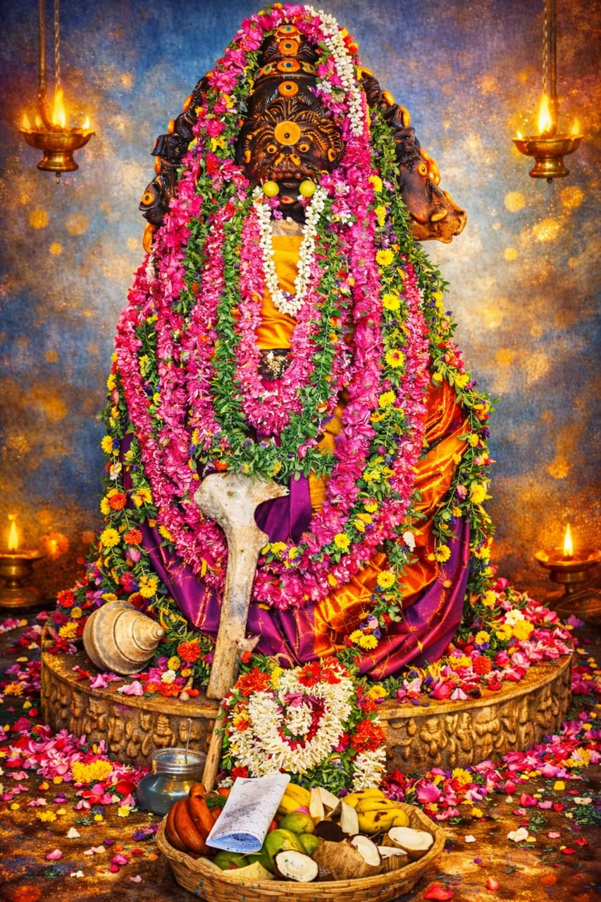

மூலவர் — பிரதான தெய்வம்
Moolavár — Principal Deity
मूलवर — प्रधान देवता
మూలవర్ — ప్రధాన దేవత
മൂലവർ — പ്രധാന ദേവത
Sri Kaar Irul Ganapadai
Bhadrakali Amman
Bhadrakali Amman
ஸ்ரீ கார் இருள் கணபடை பத்ரகாளியம்மன்
Padai Bhadra Kaliyamman
श्री कार इरुल कणपडै भद्रकाळी अम्मन
శ్రీ కార్ ఇరుల్ కణపడై భద్రకాళి అమ్మన్
ശ്രീ കാർ ഇരുൾ കണപടൈ ഭദ്രകാളി അമ്മൻ
உக்ர சக்தி வடிவம்Ugra Shakti Formउग्र शक्ति स्वरूपఉగ్ర శక్తి స్వరూపంഉഗ്ര ശക്തി ഭാവം
ஆதி வடிவம்Primordial Formआदि स्वरूपఆది స్వరూపంആദി ഭാവം
காவல் தெய்வம்Guardian Deityरक्षक देवीకాపలా దేవతകാവൽ ദേവത
விஷ்ணு தரிசனம்Vishnu Darshanविष्णु दर्शनవిష్ణు దర్శనంവിഷ്ണു ദർശനം
உலகில் வேறு எங்கும் தரிசிக்க முடியாத உருவத்தில் காட்சி அளிக்கும் அன்னை மகா காளியின் ஆதி வடிவம். வைகுண்ட ஏகாதசி அன்று சொர்க்கவாசல் திறந்து மகா காளி அன்னை ஸ்ரீமன் விஷ்ணு ரூபத்தில் காட்சி கொடுக்கும் ஒரே ஆலயம். மந்திரம் யந்திரம் தந்திரம் போன்ற மாந்தரீக பிரச்சனைகளை உடனடியாக தீர்க்கும் சக்தி வாய்ந்த மகா காளியின் திருவடிகளில் விழுந்து வழிபடும் பக்தர்களுக்கு அனைத்து குறைகளும் தீரும்.
Mother Maha Kali graces this temple in her primordial form — a divine vision found nowhere else in the world. This is the only temple where, on the sacred Vaikunta Ekadasi, the gates of heaven open and Maha Kali grants darshan in the form of Sriman Vishnu. Devotees who prostrate at her divine feet find immediate solutions to all afflictions — including those caused by Mantra, Yantra, and Tantra.
माँ महाकाली यहाँ अपने आदि स्वरूप में विराजमान हैं — विश्व में अन्यत्र दुर्लभ दिव्य दर्शन। यह एकमात्र मंदिर है जहाँ वैकुंठ एकादशी पर महाकाली श्रीमन विष्णु रूप में दर्शन देती हैं। चरणों में प्रणाम करने वाले भक्तों की सभी समस्याओं का शीघ्र निवारण होता है।
అమ్మ మహాకాళి ఇక్కడ ఆది స్వరూపంలో కొలువై ఉంది — ప్రపంచంలో మరెక్కడా కాన రాని దివ్య దర్శనం. వైకుంఠ ఏకాదశి నాడు మహాకాళి శ్రీమన్ విష్ణు రూపంలో దర్శనమిచ్చే ఏకైక ఆలయం. చరణాలకు నమస్కరించే భక్తుల అన్ని కష్టాలు తొలగిపోతాయి.
അമ്മ മഹാകാളി ഇവിടെ ആദി സ്വരൂപത്തിൽ കുടികൊള്ളുന്നു — ലോകത്ത് മറ്റൊരിടത്തും ദർശിക്കാനാകാത്ത ദിവ്യ ദർശനം. വൈകുണ്ഠ ഏകാദശിയിൽ മഹാകാളി ശ്രീമൻ വിഷ്ണു രൂപത്തിൽ ദർശനം നൽകുന്ന ഏകൈക ക്ഷേത്രം. തൃക്കാലിൽ വണങ്ങുന്ന ഭക്തരുടെ എല്ലാ ദുഃഖങ്ങളും തീരും.
வைகுண்ட ஏகாதசி
Vaikunta Ekadasi
वैकुंठ एकादशी
వైకుంఠ ఏకాదశి
വൈകുണ്ഠ ഏകാദശി
விஷ்ணு ரூபத்தில் காட்சி தரும் ஒரே ஆலயம்
Only temple granting Vishnu darshan
विष्णु रूप में दर्शन देने वाला एकमात्र मंदिर
విష్ణు రూపంలో దర్శనమిచ్చే ఏకైక ఆలయం
വിഷ്ണു രൂപത്തിൽ ദർശനം നൽകുന്ന ഏകൈക ക്ഷേത്രം
ஸ்ரீ சக்ர விமானம்
Sri Chakra Vimanam
श्री चक्र विमान
శ్రీ చక్ర విమానం
ശ്രീ ചക്ര വിമാനം
தேவலோக சிற்ப முறையில் அமைந்த திருக்கோவில்
Built in Devaloka Shilpa tradition
देवलोक शिल्प में निर्मित
దేవలోక శిల్ప సంప్రదాయంలో నిర్మించిన
ദേവലോക ശില്പ ക്ഷേത്രം
குலதெய்வ வழிகாட்டல்
Kula Deivam Guidance
कुलदेवता मार्गदर्शन
కులదేవత మార్గదర్శనం
കുലദേവതാ മാർഗദർശനം
சொப்பனத்தில் குலதெய்வம் காண்பிக்கும்
Ancestral deity revealed in dreams
स्वप्न में कुलदेवता का प्रकाशन
స్వప్నంలో కులదేవత వెల్లడి
സ്വപ്നത്തിൽ കുലദേവത വെളിപ്പെടൽ
மாந்திரீக தீர்வு
Occult Relief
मांत्रिक समाधान
మాంత్రిక పరిష్కారం
മന്ത്ര-തന്ത്ര പ്രശ്ന നിവൃത്തി
மந்திரம் யந்திரம் தந்திரம் பிரச்சனைகள் தீரும்
Mantra, Yantra, Tantra issues resolved
मंत्र, यंत्र, तंत्र समस्याओं का समाधान
మంత్ర, యంత్ర, తంత్ర సమస్యలకు పరిష్కారం
മന്ത്ര, യന്ത്ര, തന്ത്ര പ്രശ്നങ്ങൾ തീരും